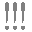
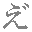
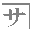
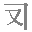
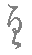
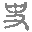
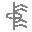
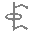
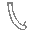

‼ ※［＃感嘆符二つ、1-8-75］
 ※［＃感嘆符三つ、ページ数-行数］
⁇ ※［＃疑問符二つ、1-8-76］
⁈ ※［＃疑問符感嘆符、1-8-77］
⁉ ※［＃感嘆符疑問符、1-8-78］
¡ ※［＃逆感嘆符、1-9-3］
¿ ※［＃逆疑問符、1-9-22］
※［＃疑問符一つ感嘆符二つ、ページ数-行数］
｟ ※［＃始め二重括弧、1-2-54］
｠ ※［＃終わり二重括弧、1-2-55］
〘 ※［＃始め二重きっこう（亀甲）括弧、1-2-56］
〙 ※［＃終わり二重きっこう（亀甲）括弧、1-2-57］
〖 ※［＃始めすみ付き括弧（白）、1-2-58］
〗 ※［＃終わりすみ付き括弧（白）、1-2-59］
« ※［＃始め二重山括弧引用記号，始めギュメ、1-9-8］
» ※［＃終わり二重山括弧引用記号，終わりギュメ、1-9-18］
〻 ※［＃二の字点、1-2-22］ゆすり点ともいう
※［＃濁点付き二の字点、ページ数-行数］
〼 ※［＃ます記号、1-2-23］
ヿ ※［＃コト、1-2-24］
ゟ ※［＃より、1-2-25］
か ※［＃小書き平仮名か、1-4-85］
け ※［＃小書き平仮名け、1-4-86］
た ※［＃小書き平仮名た、ページ数-行数］
な ※［＃小書き平仮名な、ページ数-行数］
わ ※［＃小書き平仮名わ、ページ数-行数］
ゑ ※［＃小書き平仮名ゑ、ページ数-行数］
ん ※［＃小書き平仮名ん、ページ数-行数］
ゔ ※［＃濁点付き平仮名う、1-4-84］
 ※［＃濁点付き平仮名え、ページ数-行数］
づ ※［＃濁点付き小書き平仮名つ、ページ数-行数］
か゚ ※［＃半濁点付き平仮名か、1-4-87］
き゚ ※［＃半濁点付き平仮名き、1-4-88］
く゚ ※［＃半濁点付き平仮名く、1-4-89］
け゚ ※［＃半濁点付き平仮名け、1-4-90］
こ゚ ※［＃半濁点付き平仮名こ、1-4-91］
ガ ※［＃小書き片仮名ガ、ページ数-行数］
ガ ※［＃「ガ」は下付き小文字、ページ数-行数］
ク ※［＃小書き片仮名ク、1-6-78］
シ ※［＃小書き片仮名シ、1-6-79］
ス ※［＃小書き片仮名ス、1-6-80］
タ ※［＃小書き片仮名タ、ページ数-行数］
チ ※［＃小書き片仮名チ、ページ数-行数］
ト ※［＃小書き片仮名ト、1-6-81］
ヌ ※［＃小書き片仮名ヌ、1-6-82］
ノ ※［＃小書き片仮名ノ、ページ数-行数］
ハ ※［＃小書き片仮名ハ、1-6-83］
ヒ ※［＃小書き片仮名ヒ、1-6-84］
フ ※［＃小書き片仮名フ、1-6-85］
ヘ ※［＃小書き片仮名ヘ、1-6-86］
ホ ※［＃小書き片仮名ホ、1-6-87］
マ ※［＃小書き片仮名マ、ページ数-行数］
ム ※［＃小書き片仮名ム、1-6-89］
ラ ※［＃小書き片仮名ラ、1-6-90］
リ ※［＃小書き片仮名リ、1-6-91］
ル ※［＃小書き片仮名ル、1-6-92］
レ ※［＃小書き片仮名レ、1-6-93］
ロ ※［＃小書き片仮名ロ、1-6-94］
ン ※［＃小書き片仮名ン、ページ数-行数］
ヰ ※［＃小書き片仮名ヰ、ページ数-行数］
ヱ ※［＃小書き片仮名ヱ、ページ数-行数］
ラ゛ ※［＃濁点付き片仮名ラ、ページ数-行数］u30E9+309B
ヷ ※［＃濁点付き片仮名ワ、1-7-82］
ヸ ※［＃濁点付き片仮名ヰ、1-7-83］
ヹ ※［＃濁点付き片仮名ヱ、1-7-84］
ヺ ※［＃濁点付き片仮名ヲ、1-7-85］
カ゜ ※［＃半濁点付き片仮名カ、1-5-87］
キ゜ ※［＃半濁点付き片仮名キ、1-5-88］
ク゜ ※［＃半濁点付き片仮名ク、1-5-89］
ケ゜ ※［＃半濁点付き片仮名ケ、1-5-90］
コ゜ ※［＃半濁点付き片仮名コ、1-5-91］
セ゜ ※［＃半濁点付き片仮名セ、1-5-92］
ツ゜ ※［＃半濁点付き片仮名ツ、1-5-93］
ト゜ ※［＃半濁点付き片仮名ト、1-5-94］
ラ゜ ※［＃半濁点付き片仮名ラ、ページ数-行数］u30E9+309C
ㇷ゜ ※［＃半濁点付き小書き片仮名フ、1-6-88］
※［＃丸い、ページ数-行数］
㋐ ※［＃丸ア、1-12-59］
㋑ ※［＃丸イ、1-12-60］
㋒ ※［＃丸ウ、1-12-61］
㋓ ※［＃丸エ、1-12-62］
㋔ ※［＃丸オ、1-12-63］
㋕ ※［＃丸カ、1-12-64］
㋖ ※［＃丸キ、1-12-65］
㋗ ※［＃丸ク、1-12-66］
㋘ ※［＃丸ケ、1-12-67］
㋙ ※［＃丸コ、1-12-68］
㋚ ※［＃丸サ、1-12-69］
㋛ ※［＃丸シ、1-12-70］
㋜ ※［＃丸ス、1-12-71］
㋝ ※［＃丸セ、1-12-72］
㋞ ※［＃丸ソ、1-12-73］
㋟ ※［＃丸タ、1-12-74］
㋠ ※［＃丸チ、1-12-75］
㋡ ※［＃丸ツ、1-12-76］
㋢ ※［＃丸テ、1-12-77］
㋣ ※［＃丸ト、1-12-78］
㋤ ※［＃丸ナ、ページ数-行数］u32E4
㋥ ※［＃丸ニ、1-12-81］
㋦ ※［＃丸ヌ、ページ数-行数］u32E6
㋧ ※［＃丸ネ、ページ数-行数］u32E7
㋨ ※［＃丸ノ、ページ数-行数］u32E8
㋩ ※［＃丸ハ、1-12-80］
㋪ ※［＃丸ヒ、ページ数-行数］u32EA
㋫ ※［＃丸フ、ページ数-行数］u32EB
㋬ ※［＃丸ヘ、1-12-83］
㋭ ※［＃丸ホ、1-12-82］
㋮ ※［＃丸マ、ページ数-行数］u32EE
㋯ ※［＃丸ミ、ページ数-行数］u32EF
㋰ ※［＃丸ム、ページ数-行数］u32F0
㋱ ※［＃丸メ、ページ数-行数］u32F1
㋲ ※［＃丸モ、ページ数-行数］u32F2
㋳ ※［＃丸ヤ、ページ数-行数］u32F3
㋴ ※［＃丸ユ、ページ数-行数］u32F4
㋵ ※［＃丸ヨ、ページ数-行数］u32F5
㋶ ※［＃丸ラ、ページ数-行数］u32F6
㋷ ※［＃丸リ、ページ数-行数］u32F7
㋸ ※［＃丸ル、ページ数-行数］u32F8
㋹ ※［＃丸レ、ページ数-行数］u32F9
㋺ ※［＃丸ロ、1-12-79］
㋻ ※［＃丸ワ、ページ数-行数］u32FB
㋼ ※［＃丸ヰ、ページ数-行数］u32FC
㋽ ※［＃丸ヱ、ページ数-行数］u32FD
㋾ ※［＃丸ヲ、ページ数-行数］u32FE
㈪ （月）［＃「（月）」は縦中横］u322A
㈫ （火）［＃「（火）」は縦中横］u322B
㈬ （水）［＃「（水）」は縦中横］u322C
㈭ （木）［＃「（木）」は縦中横］u322D
㈮ （金）［＃「（金）」は縦中横］u322E
㈯ （土）［＃「（土）」は縦中横］u322F
㈰ （日）［＃「（日）」は縦中横］u3230
㈱ ※［＃全角括弧付き株、1-13-74］
㈲ ※［＃全角括弧付き有、1-13-75］
㈳ （社）［＃「（社）」は縦中横］u3233
㈴ （名）［＃「（名）」は縦中横］u3234
㈵ （特）［＃「（特）」は縦中横］u3235
㈶ （財）［＃「（財）」は縦中横］u3236
㈷ （祝）［＃「（祝）」は縦中横］u3237
㈸ （労）［＃「（労）」は縦中横］u3238
㈹ ※［＃全角括弧付き代、1-13-76］
㈺ （呼）［＃「（呼）」は縦中横］u323A
㈻ （学）［＃「（学）」は縦中横］u323B
㈼ （監）［＃「（監）」は縦中横］u323C
㈽ （企）［＃「（企）」は縦中横］u323D
㈾ （資）［＃「（資）」は縦中横］u323E
㈿ （協）［＃「（協）」は縦中横］u323F
㉀ （祭）［＃「（祭）」は縦中横］u3240
㉁ （休）［＃「（休）」は縦中横］u3241
㉂ （自）［＃「（自）」は縦中横］u3242
㉃ （至）［＃「（至）」は縦中横］u3243
㊊ ※［＃丸月、ページ数-行数］u328A
㊋ ※［＃丸火、ページ数-行数］u328B
㊌ ※［＃丸水、ページ数-行数］u328C
㊍ ※［＃丸木、ページ数-行数］u328D
㊎ ※［＃丸金、屋号を示す記号、ページ数-行数］u328E
㊏ ※［＃丸土、ページ数-行数］u328F
㊐ ※［＃丸日、ページ数-行数］u3290
㊑ ※［＃丸株、ページ数-行数］u3291
㊒ ※［＃丸有、ページ数-行数］u3292
㊓ ※［＃丸社、ページ数-行数］u3293
㊔ ※［＃丸名、ページ数-行数］u3294
㊕ ※［＃丸特、ページ数-行数］u3295
㊖ ※［＃丸財、ページ数-行数］u3296
㊗ ※［＃丸祝、ページ数-行数］u3297
㊘ ※［＃丸労、ページ数-行数］u3298
㊙ ※［＃丸秘、ページ数-行数］u3299
㊚ ※［＃丸男、ページ数-行数］u329A
㊛ ※［＃丸女、ページ数-行数］u329B
㊜ ※［＃丸適、ページ数-行数］u329C
㊝ ※［＃丸優、ページ数-行数］u329D
㊞ ※［＃丸印、ページ数-行数］u329E
㊟ ※［＃丸注、ページ数-行数］u329F
㊠ ※［＃丸項、ページ数-行数］u32A0
㊡ ※［＃丸休、ページ数-行数］u32A1
㊢ ※［＃丸写、ページ数-行数］u32A2
㊣ ※［＃丸正、ページ数-行数］u32A3
㊤ ※［＃丸付き上、1-13-69］
㊥ ※［＃丸付き中、1-13-70］
㊦ ※［＃丸付き下、1-13-71］
㊧ ※［＃丸付き左、1-13-72］
㊨ ※［＃丸付き右、1-13-73］
㊩ ※［＃丸医、ページ数-行数］u32
㊪ ※［＃丸宗、ページ数-行数］u32
㊫ ※［＃丸学、ページ数-行数］u32
㊬ ※［＃丸監、ページ数-行数］u32
㊭ ※［＃丸企、ページ数-行数］u32
㊮ ※［＃丸資、ページ数-行数］u32
㊯ ※［＃丸協、ページ数-行数］u32AF
㊰ ※［＃丸夜、ページ数-行数］u32
※［＃丸井、ページ数-行数］
※［＃丸通、ページ数-行数］
※［＃丸公、ページ数-行数］
㍿ ※［＃全角株式会社、ページ数-行数］u32
𡆭 ※［＃四角万、屋号を示す記号、ページ数-行数］u211AD
Ⅰ ※［＃ローマ数字1、1-13-21］
Ⅱ ※［＃ローマ数字2、1-13-22］
Ⅲ ※［＃ローマ数字3、1-13-23］
Ⅳ ※［＃ローマ数字4、1-13-24］
Ⅴ ※［＃ローマ数字5、1-13-25］
Ⅵ ※［＃ローマ数字6、1-13-26］
Ⅶ ※［＃ローマ数字7、1-13-27］
Ⅷ ※［＃ローマ数字8、1-13-28］
Ⅸ ※［＃ローマ数字9、1-13-29］
Ⅹ ※［＃ローマ数字10、1-13-30］
Ⅺ ※［＃ローマ数字11、1-13-31］
Ⅻ ※［＃ローマ数字12、1-13-55］
ⅰ ※［＃ローマ数字1小文字、1-12-21］
ⅱ ※［＃ローマ数字2小文字、1-12-22］
ⅲ ※［＃ローマ数字3小文字、1-12-23］
ⅳ ※［＃ローマ数字4小文字、1-12-24］
ⅴ ※［＃ローマ数字5小文字、1-12-25］
ⅵ ※［＃ローマ数字6小文字、1-12-26］
ⅶ ※［＃ローマ数字7小文字、1-12-27］
ⅷ ※［＃ローマ数字8小文字、1-12-28］
ⅸ ※［＃ローマ数字9小文字、1-12-29］
ⅹ ※［＃ローマ数字10小文字、1-12-30］
ⅺ ※［＃ローマ数字11小文字、1-12-31］
ⅻ ※［＃ローマ数字12小文字、1-12-32］
※［＃ローマ数字33小文字、ページ数-行数］
㊀ ※［＃丸一、ページ数-行数］u3280
㊁ ※［＃丸二、ページ数-行数］u3281
㊂ ※［＃丸三、ページ数-行数］u3282
㊃ ※［＃丸四、ページ数-行数］u3283
㊄ ※［＃丸五、ページ数-行数］u3284
㊇ ※［＃丸八、屋号を示す記号、ページ数-行数］u3287
㊉ ※［＃丸十、屋号を示す記号、ページ数-行数］u3289
⓪ ※［＃丸0、ページ数-行数］u24EA
① ※［＃丸1、1-13-1］
② ※［＃丸2、1-13-2］
③ ※［＃丸3、1-13-3］
④ ※［＃丸4、1-13-4］
⑤ ※［＃丸5、1-13-5］
⑥ ※［＃丸6、1-13-6］
⑦ ※［＃丸7、1-13-7］
⑧ ※［＃丸8、1-13-8］
⑨ ※［＃丸9、1-13-9］
⑩ ※［＃丸10、1-13-10］
⑪ ※［＃丸11、1-13-11］
⑫ ※［＃丸12、1-13-12］
⑬ ※［＃丸13、1-13-13］
⑭ ※［＃丸14、1-13-14］
⑮ ※［＃丸15、1-13-15］
⑯ ※［＃丸16、1-13-16］
⑰ ※［＃丸17、1-13-17］
⑱ ※［＃丸18、1-13-18］
⑲ ※［＃丸19、1-13-19］
⑳ ※［＃丸20、1-13-20］
㉑ ※［＃丸21、1-8-33］
㉒ ※［＃丸22、1-8-34］
㉓ ※［＃丸23、1-8-35］
㉔ ※［＃丸24、1-8-36］
㉕ ※［＃丸25、1-8-37］
㉖ ※［＃丸26、1-8-38］
㉗ ※［＃丸27、1-8-39］
㉘ ※［＃丸28、1-8-40］
㉙ ※［＃丸29、1-8-41］
㉚ ※［＃丸30、1-8-42］
㉛ ※［＃丸31、1-8-43］
㉜ ※［＃丸32、1-8-44］
㉝ ※［＃丸33、1-8-45］
㉞ ※［＃丸34、1-8-46］
㉟ ※［＃丸35、1-8-47］
㊱ ※［＃丸36、1-8-48］
㊲ ※［＃丸37、1-8-49］
㊳ ※［＃丸38、1-8-50］
㊴ ※［＃丸39、1-8-51］
㊵ ※［＃丸40、1-8-52］
㊶ ※［＃丸41、1-8-53］
㊷ ※［＃丸42、1-8-54］
㊸ ※［＃丸43、1-8-55］
㊹ ※［＃丸44、1-8-56］
㊺ ※［＃丸45、1-8-57］
㊻ ※［＃丸46、1-8-58］
㊼ ※［＃丸47、1-8-59］
㊽ ※［＃丸48、1-8-60］
㊾ ※［＃丸49、1-8-61］
㊿ ※［＃丸50、1-8-62］
⓿ ※［＃黒丸0、ページ数-行数］u24FF
❶ ※［＃黒丸1、1-12-1］
❷ ※［＃黒丸2、1-12-2］
❸ ※［＃黒丸3、1-12-3］
❹ ※［＃黒丸4、1-12-4］
❺ ※［＃黒丸5、1-12-5］
❻ ※［＃黒丸6、1-12-6］
❼ ※［＃黒丸7、1-12-7］
❽ ※［＃黒丸8、1-12-8］
❾ ※［＃黒丸9、1-12-9］
❿ ※［＃黒丸10、1-12-10］
⓫ ※［＃黒丸11、1-12-11］
⓬ ※［＃黒丸12、1-12-12］
⓭ ※［＃黒丸13、1-12-13］
⓮ ※［＃黒丸14、1-12-14］
⓯ ※［＃黒丸15、1-12-15］
⓰ ※［＃黒丸16、1-12-16］
⓱ ※［＃黒丸17、1-12-17］
⓲ ※［＃黒丸18、1-12-18］
⓳ ※［＃黒丸19、1-12-19］
⓴ ※［＃黒丸20、1-12-20］
※［＃黒丸21、ページ数-行数］
※［＃黒丸100、ページ数-行数］
⓵ ※［＃二重丸1、1-6-58］
⓶ ※［＃二重丸2、1-6-59］
⓷ ※［＃二重丸3、1-6-60］
⓸ ※［＃二重丸4、1-6-61］
⓹ ※［＃二重丸5、1-6-62］
⓺ ※［＃二重丸6、1-6-63］
⓻ ※［＃二重丸7、1-6-64］
⓼ ※［＃二重丸8、1-6-65］
⓽ ※［＃二重丸9、1-6-66］
⓾ ※［＃二重丸10、1-6-67］
（0）［＃「（0）」は縦中横］
⑴ （1）［＃「（1）」は縦中横］u2474
⑵ （2）［＃「（2）」は縦中横］u2475
⑶ （3）［＃「（3）」は縦中横］u2476
⑷ （4）［＃「（4）」は縦中横］u2477
⑸ （5）［＃「（5）」は縦中横］u2478
⑹ （6）［＃「（6）」は縦中横］u2479
⑺ （7）［＃「（7）」は縦中横］u247A
⑻ （8）［＃「（8）」は縦中横］u247B
⑼ （9）［＃「（9）」は縦中横］u247C
⑽ （10）［＃「（10）」は縦中横］u247D
⒇ （20）［＃「（20）」は縦中横］u2487
（21）［＃「（21）」は縦中横］
（100）［＃「（100）」は縦中横］
㈠ （一）［＃「（一）」は縦中横］u3220
㈩ （十）［＃「（十）」は縦中横］u3229
※［＃四角1、ページ数-行数］
※［＃四角2、ページ数-行数］
※［＃四角3、ページ数-行数］
※［＃四角4、ページ数-行数］
※［＃四角5、ページ数-行数］
※［＃四角6、ページ数-行数］
※［＃四角7、ページ数-行数］
※［＃四角8、ページ数-行数］
※［＃四角9、ページ数-行数］
※［＃四角10、ページ数-行数］
※［＃四角100、ページ数-行数］
※［＃四角一、ページ数-行数］
※［＃四角二、ページ数-行数］
※［＃四角三、ページ数-行数］
※［＃四角四、ページ数-行数］
Ⓐ ※［＃丸A大文字、ページ数-行数］u24B6
Ⓑ ※［＃丸B大文字、ページ数-行数］u24B7
Ⓒ ※［＃丸C大文字、ページ数-行数］u24B8
Ⓓ ※［＃丸D大文字、ページ数-行数］u24B9
Ⓔ ※［＃丸E大文字、ページ数-行数］u24BA
Ⓩ ※［＃丸Z大文字、ページ数-行数］u24CF
ⓐ ※［＃丸A小文字、1-12-33］
ⓑ ※［＃丸B小文字、1-12-34］
ⓒ ※［＃丸C小文字、1-12-35］
ⓓ ※［＃丸D小文字、1-12-36］
ⓔ ※［＃丸E小文字、1-12-37］
ⓕ ※［＃丸F小文字、1-12-38］
ⓖ ※［＃丸G小文字、1-12-39］
ⓗ ※［＃丸H小文字、1-12-40］
ⓘ ※［＃丸I小文字、1-12-41］
ⓙ ※［＃丸J小文字、1-12-42］
ⓚ ※［＃丸K小文字、1-12-43］
ⓛ ※［＃丸L小文字、1-12-44］
ⓜ ※［＃丸M小文字、1-12-45］
ⓝ ※［＃丸N小文字、1-12-46］
ⓞ ※［＃丸O小文字、1-12-47］
ⓟ ※［＃丸P小文字、1-12-48］
ⓠ ※［＃丸Q小文字、1-12-49］
ⓡ ※［＃丸R小文字、1-12-50］
ⓢ ※［＃丸S小文字、1-12-51］
ⓣ ※［＃丸T小文字、1-12-52］
ⓤ ※［＃丸U小文字、1-12-53］
ⓥ ※［＃丸V小文字、1-12-54］
ⓦ ※［＃丸W小文字、1-12-55］
ⓧ ※［＃丸X小文字、1-12-56］
ⓨ ※［＃丸Y小文字、1-12-57］
ⓩ ※［＃丸Z小文字、1-12-58］
※［＃黒丸A小文字、ページ数-行数］
※［＃黒丸Z小文字、ページ数-行数］
※［＃黒丸A大文字、ページ数-行数］
※［＃黒丸Z大文字、ページ数-行数］
⒜ （a）［＃「（a）」は縦中横］u249C
⒵ （z）［＃「（z）」は縦中横］u24B5
（A）［＃「（A）」は縦中横］
（Z）［＃「（Z）」は縦中横］
※［＃四角A小文字、ページ数-行数］
※［＃四角Z小文字、ページ数-行数］
※［＃四角A大文字、ページ数-行数］
※［＃四角Z大文字、ページ数-行数］
Ǎ ※［＃キャロン付きA、1-8-79］
ǎ ※［＃キャロン付きA小文字、1-8-80］
ǐ ※［＃キャロン付きI小文字、1-8-81］
Ǒ ※［＃キャロン付きO、1-8-86］
ǒ ※［＃キャロン付きO小文字、1-8-87］
ǔ ※［＃キャロン付きu小文字、1-8-88］
ǖ ※［＃マクロンとダイエレシス付きU小文字、1-8-89］
ǘ ※［＃アキュートアクセントとダイエレシス付きU小文字、1-8-90］
ǚ ※［＃キャロンとダイエレシス付きU小文字、1-8-91］
ǜ ※［＃グレーブアクセントとダイエレシス付きU小文字、1-8-92］
Ð ※［＃アイスランド語ETH、1-9-39］
Þ ※［＃アイスランド語THORN、1-9-52］
ð ※［＃アイスランド語ETH小文字、1-9-70］
þ ※［＃アイスランド語THORN小文字、1-9-83］
Ą ※［＃オゴネク付きA、1-10-1］
Ľ ※［＃キャロン付きL、1-10-4］
Š ※［＃キャロン付きS、1-10-6］
Ť ※［＃キャロン付きT、1-10-8］
Ž ※［＃キャロン付きZ、1-10-10］
Ż ※［＃上ドット付きZ、1-10-11］
ą ※［＃オゴネク付きA小文字、1-10-12］
ľ ※［＃キャロン付きL小文字、1-10-15］
š ※［＃キャロン付きS小文字、1-10-18］
ť ※［＃キャロン付きT小文字、1-10-20］
ž ※［＃キャロン付きZ小文字、1-10-23］
ż ※［＃上ドット付きZ小文字、1-10-24］
Ă ※［＃ブリーブ付きA、1-10-26］
Č ※［＃キャロン付きC、1-10-29］
Ę ※［＃オゴネク付きE、1-10-30］
Ě ※［＃キャロン付きE、1-10-31］
Ď ※［＃キャロン付きD、1-10-32］
Ň ※［＃キャロン付きN、1-10-34］
Ő ※［＃ダブルアキュートアクセント付きO、1-10-35］
Ř ※［＃キャロン付きR、1-10-36］
Ű ※［＃ダブルアキュートアクセント付きU、1-10-38］
ă ※［＃ブリーブ付きA小文字、1-10-41］
č ※［＃キャロン付きC小文字、1-10-44］
ę ※［＃オゴネク付きE小文字、1-10-45］
ě ※［＃キャロン付きE小文字、1-10-46］
ď ※［＃キャロン付きD小文字、1-10-47］
ň ※［＃キャロン付きN小文字、1-10-50］
ő ※［＃ダブルアキュートアクセント付きO小文字、1-10-51］
ř ※［＃キャロン付きR小文字、1-10-52］
ű ※［＃ダブルアキュートアクセント付きU小文字、1-10-54］
Ŭ ※［＃ブリーブ付きU、1-10-62］
ŭ ※［＃ブリーブ付きU小文字、1-10-68］
ɱ ※［＃フック付きM小文字，有声唇歯鼻音、1-10-69］
ʋ ※［＃フック付きV小文字，有声唇歯接近音、1-10-70］
ɾ ※［＃フィッシュフック付きR小文字，有声歯茎弾き音、1-10-71］
ʃ ※［＃発音記号、「s」を縦に長くした形のもの、1-10-72］ESHエッシュ小文字
ʒ ※［＃発音記号、「ろ」に似た形のもの、1-10-73］EZHエッジュ小文字
ɬ ※［＃ベルト付きL小文字，無声歯茎側面摩擦音、1-10-74］
ɮ ※［＃LEZH小文字，有声歯茎側面摩擦音、1-10-75］
ɹ ※［＃ターンドR小文字，無声歯茎接近音、1-10-76］
ʈ ※［＃レトロフレックスフック付きT小文字，無声そり舌破裂音、1-10-77］
ɖ ※［＃テール付きD小文字，有声そり舌破裂音、1-10-78］
ɳ ※［＃レトロフレックスフック付きN小文字，有声そり舌鼻音、1-10-79］
ɽ ※［＃テール付きR小文字，有声そり舌弾き音、1-10-80］
ʂ ※［＃フック付きS小文字，無声そり舌摩擦音、1-10-81］
ʐ ※［＃レトロフレックスフック付きZ小文字，有声そり舌摩擦音、1-10-82］
ɻ ※［＃フック付きターンドR小文字，有声そり舌接近音、1-10-83］
ɭ ※［＃レトロフレックスフック付きL小文字，有声そり舌側面接近音、1-10-84］
ɟ ※［＃ストローク付きドットなしJ小文字，有声硬口蓋破裂音、1-10-85］
ɲ ※［＃左フック付きN小文字，有声硬口蓋鼻音、1-10-86］
ʝ ※［＃クロスドテール付きJ小文字，有声硬口蓋摩擦音、1-10-87］
ʎ ※［＃ターンドY小文字，有声硬口、1-10-88］
ɡ ※［＃スクリプトG小文字，有声軟口蓋破裂音、1-10-89］
ŋ ※［＃発音記号、「n」の右足を下に伸ばして左に丸めた形のもの、1-10-90］エング
ɰ ※［＃ロングレッグ付きターンドM小文字，有声軟口蓋接近音、1-10-91］
ʁ ※［＃インバーテッドRスモールキャピタル，有声口蓋垂摩擦音、1-10-92］
ʕ ※［＃リバースドグロッタルストップ，有声咽頭摩擦音、1-10-94］
ʔ ※［＃グロッタルストップ，無声声門破裂音、1-11-1］
ɦ ※［＃フック付きH小文字，有声声門摩擦音、1-11-2］
ʘ ※［＃両唇吸着音、1-11-3］
ǂ ※［＃硬口蓋歯茎吸着音、1-11-4］
ɓ ※［＃フック付きB小文字，有声両唇内破音、1-11-5］
ɗ ※［＃フック付きD小文字，有声歯茎内破音、1-11-6］
ʄ ※［＃フックとストローク付きドットなしJ小文字，有声硬口蓋内破音、1-11-7］
ɠ ※［＃フック付きG小文字，有声軟口蓋内破音、1-11-8］
Ɠ ※［＃フック付きG大文字，有声口蓋垂内破音、1-11-9］
ʉ ※［＃バー付きU小文字，円唇中舌狭母音、1-11-13］
ɘ ※［＃リバースドE小文字，非円唇中舌狭・中段母音、1-11-14］
ɵ ※［＃バー付きO小文字，円唇中舌狭・中段母音、1-11-15］
ə ※［＃発音記号、「e」を180度回転させた形、1-11-16］SCHWAシュワー小文字
ɜ ※［＃リバースドオープンE小文字，非円唇中舌広・中段母音、1-11-17］
ɞ ※［＃クローズドリバースドオープンE小文字，円唇中舌広・中段母音、1-11-18］
ɐ ※［＃ターンドA小文字，非円唇中舌狭めの広母音、1-11-19］
ɯ ※［＃ターンドM小文字，非円唇後舌狭母音、1-11-20］
ʊ ※［＃UPSILON小文字，円唇後舌広めの狭母音、1-11-21］
ɤ ※［＃ベビーガンマ，非円唇後舌狭中段母音、1-11-22］
ʌ ※［＃ターンドV小文字，非円唇後舌広・中段母音、1-11-23］
ɔ ※［＃発音記号、「c」を左右反転した形、1-11-24］オープンO小文字
ɑ ※［＃スクリプトA小文字，非円唇後舌広母音、1-11-25］
ɒ ※［＃ターンドALPHA小文字，円唇後舌広母音、1-11-26］
ʍ ※［＃ターンドW小文字，無声両唇・軟口蓋摩擦音、1-11-27］
ɥ ※［＃ターンドH小文字，有声両唇・硬口蓋接近音、1-11-28］
ʢ ※［＃ストローク付きリバースドグロッタルストップ，有声咽頭蓋摩擦音、1-11-29］
ʡ ※［＃ストローク付きグロッタルストップ，咽頭蓋破裂音、1-11-30］
ɕ ※［＃カール付きC小文字，歯茎・硬口蓋摩擦音、1-11-31］
ʑ ※［＃カール付きZ小文字，歯茎・硬口蓋摩擦音、1-11-32］
ɺ ※［＃ロングレッグ付きターンドR小文字，歯茎側面弾き音、1-11-33］
ɧ ※［＃フック付きHENG小文字，無声後部歯茎軟口蓋摩擦音、1-11-34］
ɚ ※［＃フック付きSCHWA、1-11-35］
æ̀ ※［＃グレーブアクセント付きAE小文字、1-11-36］
ǽ ※［＃アキュートアクセント付きAE小文字、1-11-37］
ὰ ※［＃グレーブアクセント付きスクリプトA小文字、1-11-38］
ɔ̀ ※［＃グレーブアクセント付きオープンO小文字、1-11-40］
ɔ́ ※［＃アキュートアクセント付きオープンO小文字、1-11-41］
ʌ̀ ※［＃グレーブアクセント付きターンドV小文字、1-11-42］
ʌ́ ※［＃アキュートアクセント付きターンドV小文字、1-11-43］
ə̀ ※［＃グレーブアクセント付きSCHWA小文字、1-11-44］
ə́ ※［＃発音記号、「e」を180度回転させた形にアキュートアクセント付き、1-11-45］アキュートアクセント付きSCHWA小文字
ɚ̀ ※［＃グレーブアクセントとフック付きSCHWA小文字、1-11-46］
ɚ́ ※［＃アキュートアクセントとフック付きSCHWA小文字、1-11-47］
ṭ ※［＃発音記号、「t」は下点付き、ページ数-行数］u1E6D
v ※［＃「v」は下線（_）付き、ページ数-行数］
※［＃発音記号、「a」の前に「‘」が付く、ページ数-行数］
※［＃発音記号、「E」の前に「‘」が付く、ページ数-行数］
※［＃発音記号、「s」の後に「´」が付く、ページ数-行数］
アクセント分解をしている箇所は、原則として和文中では〔〕（亀甲括弧、きっこうかっこ）で示す。詳しくはここを見てください。
Ḿ M' 1-8-82、アキュートアクセント付きM
ḿ m' 1-8-83、アキュートアクセント付きM小文字
Ǹ N` 1-8-84、グレーブアクセント付きN
ǹ n` 1-8-85、グレーブアクセント付きN小文字
À A` 1-9-23、グレーブアクセント付きA
Á A' 1-9-24、アキュートアクセント付きA
 A^ 1-9-25、サーカムフレックスアクセント付きA
à A~ 1-9-26、チルド付きA
Ä A: 1-9-27、ダイエレシス付きA
Å A& 1-9-28、上リング付きA
Æ AE& 1-9-29、AE
Ç C, 1-9-30、セディラ付きC
È E` 1-9-31、グレーブアクセント付きE
É E' 1-9-32、アキュートアクセント付きE
Ê E^ 1-9-33、サーカムフレックスアクセント付きE
Ë E: 1-9-34、ダイエレシス付きE
Ì I` 1-9-35、グレーブアクセント付きI
Í I' 1-9-36、アキュートアクセント付きI
Î I^ 1-9-37、サーカムフレックスアクセント付きI
Ï I: 1-9-38、ダイエレシス付きI
Ñ N~ 1-9-40、チルド付きN
Ò O` 1-9-41、グレーブアクセント付きO
Ó O' 1-9-42、アキュートアクセント付きO
Ô O^ 1-9-43、サーカムフレックスアクセント付きO
Õ O~ 1-9-44、チルド付きO
Ö O: 1-9-45、ダイエレシス付きO
Ø O/ 1-9-46、ストローク付きO
Ù U` 1-9-47、グレーブアクセント付きU
Ú U' 1-9-48、アキュートアクセント付きU
Û U^ 1-9-49、サーカムフレックスアクセント付きU
Ü U: 1-9-50、ダイエレシス付きU
Ý Y' 1-9-51、アキュートアクセント付きY
ß s& 1-9-53、エスツェット
à a` 1-9-54、グレーブアクセント付きA小文字
á a' 1-9-55、アキュートアクセント付きA小文字
â a^ 1-9-56、サーカムフレックスアクセント付きA小文字
ã a~ 1-9-57、チルド付きA小文字
ä a: 1-9-58、ダイエレシス付きA小文字
å a& 1-9-59、上リング付きA小文字
æ ae& 1-9-60、アッシュ、小文字AとEの合字
ç c, 1-9-61、セディーユ付きC小文字
è e` 1-9-62、グレーブアクセント付きE小文字
é e' 1-9-63、アキュートアクセント付きE小文字
ê e^ 1-9-64、サーカムフレックスアクセント付きE小文字
ë e: 1-9-65、ダイエレシス付きE小文字
ì i` 1-9-66、グレーブアクセント付きI小文字
í i' 1-9-67、アキュートアクセント付きI小文字
î i^ 1-9-68、サーカムフレックスアクセント付きI小文字
ï i: 1-9-69、ダイエレシス付きI小文字
ñ n~ 1-9-71、チルド付きN小文字
ò o` 1-9-72、グレーブアクセント付きO小文字
ó o' 1-9-73、アキュートアクセント付きO小文字
ô o^ 1-9-74、サーカムフレックスアクセント付きO小文字
õ o~ 1-9-75、チルド付きO小文字
ö o: 1-9-76、ダイエレシス付きO小文字
ø o/ 1-9-77、ストローク付きO小文字
ù u` 1-9-78、グレーブアクセント付きU小文字
ú u' 1-9-79、アキュートアクセント付きU小文字
û u^ 1-9-80、サーカムフレックスアクセント付きU小文字
ü u: 1-9-81、ダイエレシス付きU小文字
ý y' 1-9-82、アキュートアクセント付きY小文字
ÿ y: 1-9-84、ダイエレシス付きY小文字
Ā A_ 1-9-85、マクロン付きA
Ī I_ 1-9-86、マクロン付きI
Ū U_ 1-9-87、マクロン付きU
Ē E_ 1-9-88、マクロン付きE
Ō O_ 1-9-89、マクロン付きO
ā a_ 1-9-90、マクロン付きA小文字
ī i_ 1-9-91、マクロン付きI小文字
ū u_ 1-9-92、マクロン付きU小文字
ē e_ 1-9-93、マクロン付きE小文字
ō o_ 1-9-94、マクロン付きO小文字
Ł L/ 1-10-3、ストローク付きL
Ś S' 1-10-5、アキュートアクセント付きS
Ş S, 1-10-7、セディラ付きS
Ź Z' 1-10-9、アキュートアクセント付きZ
ł l/ 1-10-14、ストローク付きL小文字
ś s' 1-10-16、アキュートアクセント付きS小文字
ş s, 1-10-19、セディラ付きS小文字
ź z' 1-10-21、アキュートアクセント付きZ小文字
Ŕ R' 1-10-25、アキュートアクセント付きR
Ĺ L' 1-10-27、アキュートアクセント付きL
Ć C' 1-10-28、アキュートアクセント付きC
Ń N' 1-10-33、アキュートアクセント付きN
Ů U& 1-10-37、上リング付きU
Ţ T, 1-10-39、セディラ付きT
ŕ r' 1-10-40、アキュートアクセント付きR小文字
ĺ l' 1-10-42、アキュートアクセント付きL小文字
ć c' 1-10-43、アキュートアクセント付きC小文字
đ d/ 1-10-48、ストローク付きD小文字
ń n' 1-10-49、アキュートアクセント付きN小文字
ů u& 1-10-53、上リング付きU小文字
ţ t, 1-10-55、セディラ付きT小文字
Ĉ C^ 1-10-57、サーカムフレックスアクセント付きC
Ĝ G^ 1-10-58、サーカムフレックスアクセント付きG
Ĥ H^ 1-10-59、サーカムフレックスアクセント付きH
Ĵ J^ 1-10-60、サーカムフレックスアクセント付きJ
Ŝ S^ 1-10-61、サーカムフレックスアクセント付きS
ĉ c^ 1-10-63、サーカムフレックスアクセント付きC小文字
ĝ g^ 1-10-64、サーカムフレックスアクセント付きG小文字
ĥ h^ 1-10-65、サーカムフレックスアクセント付きH小文字
ĵ j^ 1-10-66、サーカムフレックスアクセント付きJ小文字
ŝ s^ 1-10-67、サーカムフレックスアクセント付きS小文字
ħ h/ 1-10-93、ストローク付きH小文字，無声咽頭摩擦音
œ oe& 1-11-10、リガチャOE小文字，円唇前舌広・中段母音
Œ OE& 1-11-11、リガチャOE大文字，円唇前舌広母音
ɨ i/ 1-11-12、ストローク付きI小文字，非円唇中舌狭母音
ς ※［＃ギリシア小文字ファイナルSIGMA、1-6-57］
現在さらに汎用性のある表記法を検討中で、次回改訂で変更する可能性があります。
音声記号のつかないギリシア文字でまず入力し、そのあとに注記として表示する。
例） λογο※［＃ギリシア小文字ファイナルSIGMA、1-6-57］［＃１文字目のοはアキュートアクセント付き］
※［＃グレーブアクセント付きスクリプトA小文字、1-11-38］
ά※［＃アキュートアクセント付きスクリプトA小文字、1-11-39］
ὲ ※［＃グレーブアクセント付きEPSILON小文字、1-11-48］
έ ※［＃アキュートアクセント付きEPSILON小文字、1-11-49］
［＃αはサーカムフレックスアクセント付き］曲アクセント
［＃αはアキュートアクセントと上付きのH付き］鋭アクセント＋帯気
［＃αは無気記号付き］「'」付き
［＃αは有気記号付き］「'」の左右反転した記号付き
［＃αは平息付き］
［＃εは上付きのH付き］帯気
ί ［＃ιはアキュートアクセント付き］ u1F77
［＃ιは平息とサーカムフレックスアクセント付き］平息＋曲アクセント
ώ ［＃ωはアキュートアクセント付き］ u1F7D
ω̂ ［＃ωはサーカムフレックスアクセント付き］
ή ［＃ηはアキュートアクセント付き］ u1F75
［＃ηは上付きのH付き］帯気
⊄ ※［＃部分集合の否定、1-2-34］
⊅ ※［＃部分集合の否定（逆方向）、1-2-35］
⊊ ※［＃真部分集合2、1-2-36］
⊋ ※［＃真部分集合2（逆方向）、1-2-37］
∉ ※［＃要素の否定，元の否定、1-2-38］
∅ ※［＃空集合、1-2-39］
⌅ ※［＃射影的関係、1-2-40］
⌆ ※［＃背景的関係、1-2-41］
⊕ ※［＃直和、1-2-49］
⊖ ※［＃丸付きマイナス、1-2-50］
⊗ ※［＃テンソル積、1-2-51］
∥ ※［＃平行、1-2-52］
∦ ※［＃平行の否定、1-2-53］
≢ ※［＃合同否定、1-2-75］
≃ ※［＃漸進的に等しい，ホモトープ、1-2-76］
≅ ※［＃同形、1-2-77］
≈ ※［＃同相、1-2-78］
≶ ※［＃小さいか大きい、1-2-79］
≷ ※［＃大きいか小さい、1-2-80］
↔ ※［＃同等、1-2-81］
⋚ ※［＃小さいか等しいか大きい、1-7-86］
⋛ ※［＃大きいか等しいか小さい、1-7-87］
∓ ※［＃負又は正符号、1-3-59］
ℵ ※［＃アレフ、1-3-60］
ℏ ※［＃エイチバー、1-3-61］
⧺ ※［＃2プラス、1-3-93］
⧻ ※［＃3プラス、1-3-94］
∟ ※［＃直角、1-13-88］
∮ ※［＃経路積分記号、1-13-83］
½ ※［＃2分の1、1-9-20］
⅓ ※［＃3分の1、1-7-88］
⅔ ※［＃3分の2、1-7-89］
¼ ※［＃4分の1、1-9-19］
¾ ※［＃4分の3、1-9-21］
⅕ ※［＃5分の1、1-7-90］
㏋ ※［＃HP，ホースパワー（馬力）、1-3-62］
ℓ ※［＃リットル、1-3-63］
℧ ※［＃モー、1-3-64］
¤ ※［＃不特定通貨記号、1-9-4］
€ ※［＃ユーロ記号、1-9-1］
℥ ※［＃「オンス」の単位記号、ページ数-行数］u2125
¦ ※［＃破断線、1-9-5］
© ※［＃著作権表示記号、1-9-6］
® ※［＃登録商標記号、1-9-10］
ª ※［＃女性序数標識、1-9-7］
º ※［＃男性序数標識、1-9-17］
⁑ ※［＃ダブルアステ、1-12-93］
⁂ ※［＃アステリズム、1-12-94］
◐ ※［＃左半黒丸、1-8-71］
◑ ※［＃右半黒丸、1-8-72］
◒ ※［＃下半黒丸、1-8-73］
◓ ※［＃上半黒丸、1-8-74］
▷ ※［＃右向三角、1-3-1］
▶ ※［＃右向黒三角、1-3-2］
◁ ※［＃左向三角、1-3-3］
◀ ※［＃左向黒三角、1-3-4］
♤ ※［＃スペード（白）、1-6-25］
♠ ※［＃スペード、1-6-26］
♢ ※［＃ダイヤ（白）、1-6-27］
♦ ※［＃ダイヤ、1-6-28］
♡ ※［＃ハート（白）、1-6-29］
♥ ※［＃ハート、1-6-30］
♧ ※［＃クラブ（白）、1-6-31］
♣ ※［＃クラブ、1-6-32］
☖ ※［＃白将棋駒、1-6-68］
☗ ※［＃黒将棋駒、1-6-69］
〠 ※［＃郵便マーク、1-6-70］
☎ ※［＃電話マーク、1-6-71］
☀ ※［＃晴マーク、1-6-72］
☁ ※［＃曇マーク、1-6-73］
☂ ※［＃雨マーク、1-6-74］
☃ ※［＃雪マーク、1-6-75］
♨ ※［＃温泉マーク、1-6-76］
☞ ※［＃指示マーク、1-13-94］
✓ ※［＃チェックマーク、1-7-91］
⌘ ※［＃コマンド記号、1-7-92］
␣ ※［＃空白記号、1-7-93］
⏎ ※［＃リターン記号（リターン）、1-7-94］
❖ ※［＃四つ菱、1-13-93］
▱ ※［＃平行四辺形、1-6-77］
⊿ ※［＃直角三角、1-13-89］
◦ ※［＃白ビュレット、1-3-31］
• ※［＃ビュレット、1-3-32］
﹆ ※［＃白ゴマ、1-3-29］
﹅ ※［＃ゴマ、1-3-30］
⦿ ※［＃丸中黒、1-3-26］
◉ ※［＃蛇の目、1-3-27］
〽 ※［＃歌記号、1-3-28］
↖ ※［＃左上向矢印、1-3-7］
↗ ※［＃右上向矢印、1-3-5］
↘ ※［＃右下向矢印、1-3-6］
↙ ※［＃左下向矢印、1-3-8］
⇄ ※［＃右矢印左矢印、1-3-9］
⇦ ※［＃左向白矢印、1-3-11］
⇧ ※［＃上向白矢印、1-3-12］
⇨ ※［＃右向白矢印、1-3-10］
⇩ ※［＃下向白矢印、1-3-13］
⤴ ※［＃曲がり矢印上がる、1-3-14］
⤵ ※［＃曲がり矢印下がる、1-3-15］
♩ ※［＃四分音符、1-2-93］
♫ ※［＃連こう（桁）付き八分音符、1-2-91］
♬ ※［＃連こう（桁）付き十六分音符、1-2-92］
♮ ※［＃ナチュラル、1-2-90］
㍉ ※［＃全角ミリ、1-13-32］
㌔ ※［＃全角キロ、1-13-33］
㌢ ※［＃全角センチ、1-13-34］
㍍ ※［＃全角メートル、1-13-35］
㌘ ※［＃全角グラム、1-13-36］
㌧ ※［＃全角トン、1-13-37］
㌃ ※［＃全角アール、1-13-38］
㌶ ※［＃全角ヘクタール、1-13-39］
㍑ ※［＃全角リットル、1-13-40］
㍗ ※［＃全角ワット、1-13-41］
㌍ ※［＃全角カロリー、1-13-42］
㌦ ※［＃全角ドル、1-13-43］
㌣ ※［＃全角セント、1-13-44］
㌫ ※［＃全角パーセント、1-13-45］
㍊ ※［＃全角ミリバール、1-13-46］
㌻ ※［＃全角ページ、1-13-47］
㎜ ※［＃全角MM、1-13-48］
㎝ ※［＃全角CM、1-13-49］
㎞ ※［＃全角KM、1-13-50］
㎎ ※［＃全角MG、1-13-51］
㎏ ※［＃全角KG、1-13-52］
㏄ ※［＃全角CC、1-13-53］
㎡ ※［＃全角M2、1-13-54］
№ ※［＃全角NO、1-13-66］
㏍ ※［＃全角KK、1-13-67］
℡ ※［＃全角TEL、1-13-68］
㍾ ※［＃全角元号明治、1-13-77］
㍽ ※［＃全角元号大正、1-13-78］
㍼ ※［＃全角元号昭和、1-13-79］
㍻ ※［＃全角元号平成、1-13-63］
² ［＃「２」は上付き小文字］1-9-12
³ ［＃「３」は上付き小文字］1-9-13
¹ ［＃「１」は上付き小文字］1-9-11
※［＃「，」は天地左右中央、ページ数-行数］
※［＃図形、□（四角）に内接する◆、ページ数-行数］
※［＃「Ｌ＜ｉ」、ページ数-行数］
卐 ※［＃「卍」を左右反転したもの、ページ数-行数］u5350
𠃍 ※［＃「┐」、屋号を示す記号、ページ数-行数］］
※［＃丸Σ、ページ数-行数］
※［＃「の＜小さい「り」」、屋号を示す記号、ページ数-行数］
※［＃「仝」の「工」に代えて「川」、屋号を示す記号、ページ数-行数］
※［＃「仝」の「工」に代えて「サ」、屋号を示す記号、ページ数-行数］
※［＃「仝」の「工」に代えて「ナ」、屋号を示す記号、ページ数-行数］
※［＃「仝」の「工」に代えて「吉」、屋号を示す記号、ページ数-行数］
※［＃「仝」の「工」に代えて「二」、屋号を示す記号、ページ数-行数］
※［＃「仝」の「工」に代えて「炭」、屋号を示す記号、ページ数-行数］
※［＃「∴／ノ」、屋号を示す記号、ページ数-行数］
 ※［＃「┐＜サ」、屋号を示す記号、ページ数-行数］
 ※［＃「┐＜又」、屋号を示す記号、ページ数-行数］
※［＃「「銀行」を表す「地図記号」＜丸」、屋号を示す記号、ページ数-行数］
 ※［＃草書体かしく、ページ数-行数］
※［＃草書体かしく、ページ数-行数］
※［＃草書体かしこ、ページ数-行数］
 ※［＃草書体まいらせそろ、ページ数-行数］
 ※［＃篆書体「史」、ページ数-行数］読みは「し」
※［＃篆書体「中」、ページ数-行数］読みは「ちゅう」
 ※［＃篆書体別体1「中」、ページ数-行数］読みは「ちゅう」
 ※［＃篆書体篆書体別体2「中」、ページ数-行数］読みは「ちゅう」
※［＃変体仮名え、ページ数-行数］
※［＃変体仮名く、ページ数-行数］
※［＃変体仮名ぞ、ページ数-行数］
※［＃「易の陰爻、陽爻を半分にしたものを二つ横に並べた形」、ページ数-行数］
※［＃「乙」の白拔き、ページ数-行数］
※［＃「弋」の第二画の白拔き、ページ数-行数］
※［＃「三」「二」「一」を縦に並べたような字、ページ数-行数］
※［＃「子」は「ネ」に代えて使われ、小文字になっている、ページ数-行数］
※［＃「叔」の別体、ページ数-行数］
※［＃易の陽爻、横長の矩形一つ、ページ数-行数］
※［＃「シ」の右上に小さな四角あり、ページ数-行数］
※［＃「月二」は１８０度回転、ページ数-行数］
※［＃２文字分のつながった２重線、ページ数-行数］
※［＃８からαまでアラベスクの飾り文字。以下同様、ページ数-行数］
※［＃以下「Ａ」と「Ｂ」は「油」の下で二行に分かれ「Ａ」「Ｂ」の下に上向きのくくり記号、ページ数-行数］
※［＃「こと」の合字、ページ数-行数］